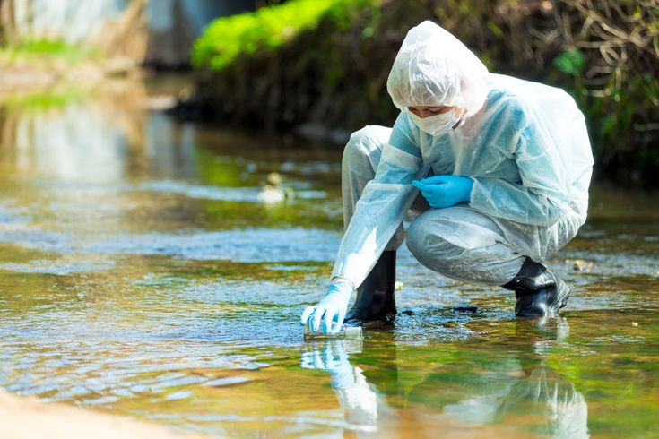

Prevent plastic waste from reaching rivers and oceans
Organize regular beach and coastal cleanups
Encourage businesses to use reusable and biodegradable packaging
Raise public awareness about the dangers of plastic pollution on marine life
Cleaner Oceans: By reducing plastic waste, our oceans can become cleaner, marine life can be protected, and underwater ecosystems can recover.
Breathing Cleaner Air
Reduce emissions from cars, buses, and other transportation.
Encourage the use of public transportation, bicycles, and electric vehicles
Replace fossil fuels with cleaner and renewable energy sources
Install effective filters and pollution-control systems in factories
Increase green spaces and plant more trees in cities
Enforce strict air-quality standards and regularly monitor industrial emissions
cleaner Air: By reducing harmful emissions, we can improve air quality, protect people's health, and create healthier cities.
Protecting Our Marine Ecosystems
Improve safety standards and maintenance procedures for oil tankers.
Regularly inspect ships and pipelines to detect leaks before they become serious
Develop rapid emergency response plans for oil spills
Use containment barriers to prevent spilled oil from spreading
Clean affected beaches and marine habitats as quickly as possible
Hold companies responsible for the environmental damage caused by oil spills
Safer Seas: By preventing and controlling oil spills, we can protect marine life, preserve coastal ecosystems, and keep our oceans cleaner.
Restoring Our Forests
Stop illegal logging and uncontrolled cutting of trees.
Plant new trees and restore forests damaged by human activities.
Promote sustainable farming practices that require less land clearing.
Protect wildlife habitats and establish protected forest areas.
Encourage the use of recycled paper and sustainable wood products.
Educate communities about the importance of forests and biodiversity.
Greener Forests: By protecting and restoring forests, we can preserve wildlife habitats, increase biodiversity, and reduce carbon dioxide in the atmosphere.

Cleaner Mining Practices
Replace mercury-based gold extraction with safer alternatives.
Properly treat and dispose of mining waste to prevent contamination.
Regularly test nearby soil and water for mercury pollution.
Enforce strict environmental regulations on mining operations.
Provide miners with safer and cleaner mining technologies.
Restore damaged land after mining activities are completed.
safer Mining: By using cleaner mining methods, we can reduce mercury pollution, protect water and wildlife, and create safer conditions for mining communities.
Building Cleaner Industries
Use cleaner technologies that produce fewer harmful emissions.
Treat toxic wastewater before releasing it into the environment.
Store and dispose of hazardous chemicals safely.
Install pollution-control systems in factories.
Reduce energy consumption by using more efficient equipment.
Switch to renewable energy sources whenever possible.
Cleaner Industries: By reducing factory emissions and properly managing toxic waste, we can create cleaner environments, protect nearby communities, and reduce industrial damage to nature.
.png)

.jpg)